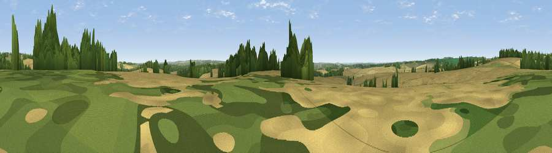

Viewpoint near Hannington
#29923 in England · top 35% of its area beats it · near HanningtonThe view, rendered

A 360° render of this exact spot computed from the terrain model, tree cover and land cover — summer colours, afternoon light, calibrated against photographs of famous viewpoints. Real trees, hedges and buildings will differ in detail.
The panorama
Grey silhouette: terrain skyline in each direction (720 bearings, Earth curvature and refraction included). Dashed green: skyline with trees (+15 m) and buildings (+8 m) as obstacles. Blue strip: how far the ground is visible on each bearing.
Where the view opens
Wedge length = distance to the farthest visible ground on that bearing (vegetation-aware). Rings at 10, 25 and 50 km.
What fills the view
69% cropland · 17% grassland · 13% woodland ·
Angular shares of the visible panorama (visual magnitude), not map area. Landscape diversity 0.38 (0–1 Shannon).
Key numbers
More beautiful places nearby
The staircase of upgrades: each row has a higher view potential than everything closer. Driving times are estimates from straight-line distance, calibrated against real road routing — check an actual route before setting out.
| Place | Direction | Drive | Score |
|---|---|---|---|
| Cottington's Hill | NNW · 3 km | ~8 min | 65.6 |
| Watership Down | NW · 5 km | ~12 min | 71.4 |
| Beacon Hill | WNW · 9 km | ~17 min | 76.7 |
| Martinsell viewpoint | WNW · 37 km | ~56 min | 77.3 |
| Viewpoint near Buriton | SSE · 38 km | ~57 min | 80.0 |
| Beacon Hill | SE · 44 km | ~65 min | 85.8 |
| Mottistone Down | SSW · 70 km | ~94 min | 87.2 |
| Viewpoint near St. Lawrence | S · 76 km | ~100 min | 88.2 |
51.27912, -1.23130 · source: osm peak · position refined by local search. Computed location — check access rights before visiting.